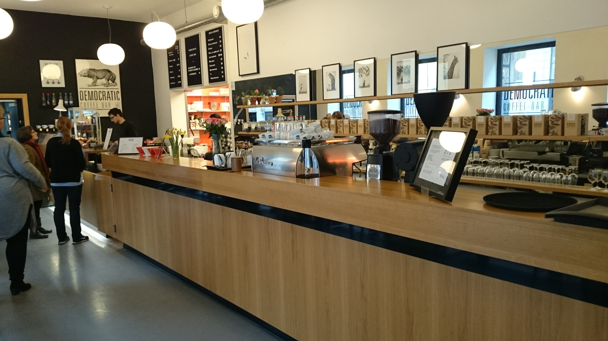

Images

Google Rating:
Located in the busy Krystalgade in Copenhagen’s centre, close to Nørreport, this coffee shop is named after its location in one of the most democratic places you’ll find – the library.
Every day, Democratic Coffee attracts lots of students, business people or whoever just want a great cup of coffee, often accompanied by the speciality of the café – their almond croissant, which is freshly baked at the spot twice a day. Just like the famous pastry, all the baked goodies are homemade right behind the counter.
But, most importantly is of course the coffee. Democratic Coffee specialises in single-origin, lightly roasted coffee which they’ve just recently started selling as beans as well. The small company don’t have the capacity to roast in-house, so they head over to The Factory at Refshaleøen, where you can book a coffee roaster – who knew that was a thing? If you’re looking for a good place to study, read the paper or enjoy your morning coffee in the vibrant heart of Copenhagen, this place is worth a visit.| Day | Opening Hours |
|---|---|
| Monday-Friday | 07.30-17 |
| Saturday-Sunday | 09-16 |